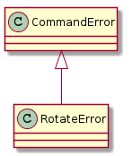
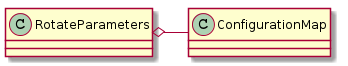
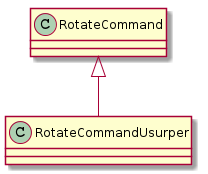

A command-line interface to run the rotate command remotely.
<class 'ImportError'>
cannot import name 'IntType'
SIGKILL = 9
PROCESS = 'rotate'

class RotateError(CommandError):
"""
An error in the rotation
"""
# end class RotateError
This is a class intended for the RotateCommand.__call__. It generates arguments based on what settings it gets. It is only concerned with the argument string(s) needed to be sent to the rotate command. Something else will have to make sure that the right arguments are sent to the right table.

RotateParameters |
|
RotateParameters.configuration |
|
RotateParameters.section |
|
RotateParameters.angles |
|
RotateParameters.argument_strings |
|
RotateParameters.values_string |
|
RotateParameters.booleans_string |
|
RotateParameters.base_arguments |
The basic idea (assuming you only have one table) is that you would traverse the argument_strings and send them to the call.
rotate = RotateCommand(connections=connection)
parameters = RotateParameters(configuration, section='table1')
for arguments in pramaters.argument_strings:
command(arguments)
This is not nearly so straight-forward in the builders themselves since the rotate is called in between the iperf calls... how does this work?
RotateCommand |
|
RotateCommand.kill |
|
RotateCommand.kill_process |
|
RotateCommand.__call__ |
|
RotateCommand.check_errors |
This is the original rotate command when the tables were giving feedback for their positions.
This is the newer rotate command (as of November 3, 2014) to use the replacement turntables built with raised platforms to temper the effects of electro-magnetic interferece created by the turntable’s motor.

RotateCommandUsurper |
|
RotateCommandUsurper.__call__ |
|
RotateCommandUsurper.rotate |
if __name__ == "__main__":
from apetools.connections.sshconnection import SSHConnection
c = SSHConnection("pogo2", "root")
r = RotateCommand(c)
print("Rotate to 90 degrees")
r(90)
time.sleep(1)
print("Rotate to 180 Degrees")
r(180)
time.sleep(1)
print( "Rotate to 0 degrees")
r()